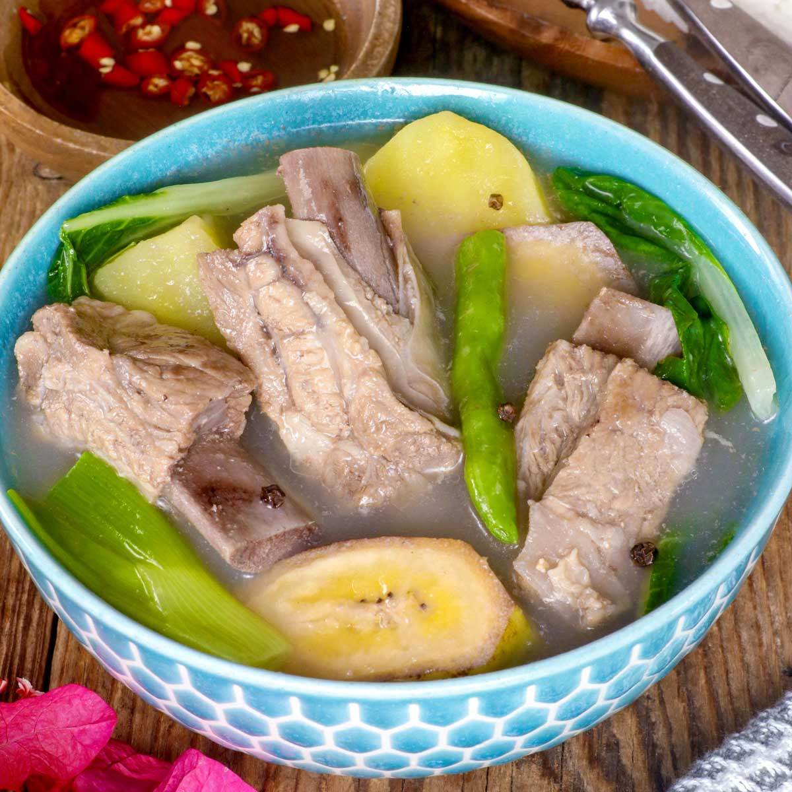

Home
Sinigang

Description
Nilaga is a traditional meat stew or soup from the Philippines, made with boiled beef or pork mixed with various vegetables such as sweet corn, potatoes, kale, and bok choy. It is typically eaten with white rice and is served with soy sauce, patis, labuyo chilis, and calamansi on the side.
Ingredients
- 2 lbs. pork belly cut into cubes
- 1 Knorr Pork Cube
- 3 to 4 small potato peeled and sliced in half
- 2 pieces ripe saba banana sliced
- 6 to 8 ounces pechay or bok choy
- 1 medium yellow onion sliced
- 6 to 7 cups water
- 1 tablespoon whole peppercorn
- 2 to 3 tablespoons fish sauce
Steps
- Pour water in a cooking pot. Let boil.
- Add onion and whole peppercorn. Continue to boil until the onion becomes tender.
- Put the pork belly into the cooking pot. Let the water re-boil.
- Add the pork cube. Stir. Cover the pot and continue to cook in low heat for 45 to 60 minutes or until the pork gets tender.
- Add potato and saba banana. Cook for 5 to 7 minutes.
- Add the fish sauce and pechay or bok choy. Stir. Cook for 3 to 5 minutes.
- Transfer to a serving bowl. Serve.
- Share and enjoy!